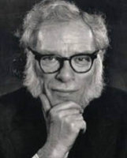

(1920 – 1992)

"Robot" sözcüğünü o keşfetmedi, ama bir robotun ana kahramanı olduğu ilk romanı Isaac Asimov yazdı. Tarihteki en üretken yazarlardan biri olup çocuk yaşından yaşamının son anına kadar durmaksızın yazan ve yazdıklarıyla mecazi anlamda değil gerçek anlamda "bambaşka alemlerin kapılarını açan" bir bilimkurgu dehası olarak tanındı.
Isaac Asimov (okunuşu: Ayzek Asimov), 2 Mayıs 1920 günü Rusya'nın Smolensk kenti yakınlarındaki Petroviçi'de, Isaak Judah Ozimov adıyla dünyaya geldi. Annesi Rachel ve babası Judah Yahudi'ydi ve değirmencilik yapıyordu. 1923 yılında Ozimov ailesi ABD'ye göç ederek New York'un Brooklyn bölgesine yerleştiler ve soyadlarını Asimov olarak değiştirdiler. Bu arada, Isaac'i okula bir yıl erken gönderebilmek için doğum tarihi de 1919 olarak değiştirilmişti.
Isaac daha beş yaşındayken iyi bir okurdu ve 1925 yılında ilkokula başladı. Sınıflarını büyük bir hızla geçen Asimov, 1935 yılında liseyi bitirdi; 1939 yılında Columbia Üniversitesi'nden kimya dalında lisans derecesiyle mezun oldu ve 1941 yılında da aynı üniversitede yüksek lisansını tamamladı. 1942-45 yılları arasında Philadelphia'daki Donanma Hava İstasyonu'nda kimyager olarak çalışan Asimov, II. Dünya Savaşı'nın ardından askere alındı. Oahu Adası'na tayin edilen Asimov, Bikini Adaları'nda gerçekleştirilecek olan atom bombası çalışmalarına katılmak zorunda kaldı, ama Mayıs 1946'da görevinden ayrılarak Temmuz 1946'da gerçekleştirilen denemeye katılmamayı başardı. 1948 yılında kimya doktorasını tamamlayan yazar 1949 yılında Boston Üniversitesi Tıp Fakültesi'nde kimya dersleri vermeye başladı ve 1951 yılında profesör asistanı, 1955 yılında ise doçent oldu. Yazarlıktan kazandıkları öğretmen maaşını fazlasıyla geçince, Asimov 1958 yılında öğretmenliği bıraktı ve zamanının tamamını yazmaya ayırdı. 1979 yılında profesör olan yazar, okulda konuk hoca olarak ders vermeye devam etti ve dersleri her zaman büyük ilgi gördü.
Hayatı boyunca kendini bir "hümanist ve akılcı" olarak tanımlayan Asimov, dini inançlara karşı olmamakla beraber batıl düşüncelere ve bilimsel temeli olmayan fikirlere her zaman karşı çıktı. Her türlü savaşa karşı olan yazar, çevreci hareketlere ve kadının özgürleşme hareketlerine de çok yakındı. Asimov yapıtlarının tamamını verdiği bilimkurgu alanını, her türlü fikir ve hipotezin toplandığı ve uzun tartışmalarla beslenen bir havuza benzetmekteydi. Çocukken babasının dükkanında çalışırken sattığı bilimkurgu dergilerinin tamamını defalarca okuyan Isaac Asimov, daha on bir yaşındayken bir çocuğun maceralarını anlatan bir bilimkurgu romanının sekiz bölümünü yazmıştı bile. İlk öyküsü olan Vesta'dan Sürgün 1939 yılında İnanılmaz Öyküler adlı dergide çıktı. Asimov, 1941 yılında yayımlanan ve her 2049 yılda bir gece yaşanan bir gezegeni anlattığı Gecenin Gelişi adlı öyküsüyle bir anda ünlü oldu. Bu öykü, tüm zamanların en iyi bilimkurgu öykülerinden biri olarak kabul edildi. Beş yüz kadar yapıtta yazar, ortak yazar veya editör olarak katkısı bulunan Asimov bilimkurgu alanında birçok sözcük icat etmiştir ve bu sözcükler bugün İngilizce başta olmak üzere birçok dilde kullanılmaktadır. Yakın zamanda filme de çekilen Ben, Robot ve yazdığı en ünlü seri olan Vakıf dışında, kurmuş olduğu Isaac Asimov Bilimkurgu Dergisi de uzun yıllar boyunca ayakta kalmıştır.
1942 yılında Gertrude Blugherman'la evlenen Asimov'un bu evlilikten bir kızı ve bir oğlu oldu. Bu evliliği 1970 yılında sonlanan yazar, 1973 yılında da ikinci eşi Janet Opal Jeppson'la evlendi. Isaac Asimov, 1983 yılında geçirdiği bir kalp ameliyatı sırasında kendisine verilen hastalıklı kandan dolayı AIDS hastalığına yakalandı. Yazar, hastalığını halka açıklamak istese de AIDS o zamanlar tam olarak bilinen bir hastalık olmadığı için doktorları onu susmaya ikna etti. Tüm zamanların en iyi bilimkurgu yazarlarından biri kabul edilen ve yazdıklarının çokluğundan dolayı "daktilo insan" lakabı takılan Isaac Asimov 6 Nisan 1992'de AIDS hastalığına bağlı olan kalp ve böbrek yetmezliği nedeniyle Boston'da öldü. Vasiyeti gereği, cesedi yakıldı ve külleri sevdiği mekanlara serpildi.
Seçme Romanları: Ben Robot (1950 –Altın Kitaplar, İstanbul), Galaktik İmparatorluk Romanları (1950-52/3 kitap), Vakıf Üçlemesi (1951-53/3 kitap), Lucky Starr Serisi ( 'Paul French' adıyla – 1952-58/6 kitap), Robot Serileri (1954-85/4 kitap), Sonsuzluğun Sonu (1955), Dünya Hepimize Yeter (1957 – Cep Kitapları, İstanbul), Yaşam ve Enerji (1962), Orada Kimse Var Mı? (1967), Orada Norby Günlükleri (Janet Asimov'la birlikte – 1983-91/10 kitap), Sonsuzluğa Giden Yol (1979), Yanlışlığın Göreceliği (1988), Azazel (1988), Ben Asimov (Anılar – 1994)